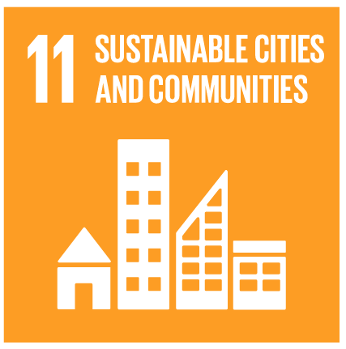
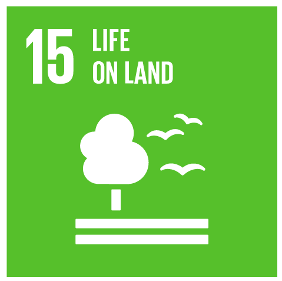

Proyectos desarrollados
En POLYGESTA hemos formulado y ejecutado diversos proyectos de la mano de valiosos aliados en la academia, la industria, el Estado y las comunidades.
Adopción y apropiación de desarrollos tecnológicos generados y/o apropiados para el uso eficiente de los recursos naturales y la agrobiodiversidad, y el fortalecimiento de la agenda cero deforestaciones en la jurisdicción de CORANTIOQUIA
Líneas de Investigación
Gestión y evaluación ambiental
Política y Legislación Ambiental



Objetivo General
Aunar esfuerzos técnicos y financieros para la adopción y apropiación de desarrollos tecnológicos generados y/o apropiados para el uso eficiente de los recursos naturales y la agrobiodiversidad, y el fortalecimiento de la agenda cero deforestaciones en la jurisdicción de CORANTIOQUIA
Problemática que abordamos
Las comunidades locales de la jurisdicción, vienen realizando el uso y aprovechamientos alternativo de productos no maderables del bosque, de especies como el coco cristal, algarrobo, sangre toro, agraz, palma mil pesos, guadua, caña flecha o brava, caña amarga, entre otras muchas especies, a través de métodos y prácticas propias que pueden ser objeto de mejoramiento para atender demandas locales. Pero también surgen algunos segmentos de mercado que han comenzado a exigir diferentes requisitos medio ambientales, requiriéndose por medio de la exploración e investigación aprovechar los múltiples beneficios que traen los recursos que nos brinda la naturaleza.
Resultados asociados
Instrumento para seguimiento del acuerdo cero deforestaciones
Informe de la apropiación y transferencia a las comunidades de las 15 especies priorizadas.
Cartografía de impacto de acciones de Cero deforestaciones que muestre el antes del después de la implementación, para identificar el impacto de la puesta en marcha del Acuerdo.
Fortalecimiento de capacidades locales para el desarrollo productivo compatible con el clima, el aseguramiento de los medios de vida sostenible y evitar la crisis de seguridad alimentaria, mediante procesos de innovación abierta y participativa en la Vereda el Pencal, municipio de Olaya
Líneas de Investigación
Sostenibilidad y economía circular
Problemática que abordamos
Limitadas capacidades locales para el desarrollo productivo compatible con el clima para atender al aseguramiento de los medios de vida sostenible y evitar la crisis de seguridad alimentaria derivada de la emergencia económica, social y ecológica causada por el COVID-19 en el municipio de Olaya.
Objetivo General
Fortalecer las capacidades locales para el desarrollo productivo compatible con el clima, el aseguramiento de los medios de vida sostenibles y evitar la crisis de seguridad alimentaria, mediante innovación abierta y participativa en la vereda el Pencal, municipio de Olaya del departamento Antioquia.
Resultados asociados
Proceso de valoración participativa de las prácticas locales enfocadas en la adaptación al cambio climático basada en comunidades realizadas en la vereda El Pencal.
Prácticas locales de adaptación al cambio climático basadas en comunidades realizadas en la vereda El Pencal.
Concepto jurídico de análisis de conveniencia de la figura jurídica organizativa para promover el desarrollo local, conforme la visión de la comunidad.
Plan de Negocios Verde Sostenibles y Modelos de Comercialización basados en circuitos cortos de proximidad, enfocados en madres cabeza de familia y jóvenes, estructurados de forma conjunta con la comunidad.